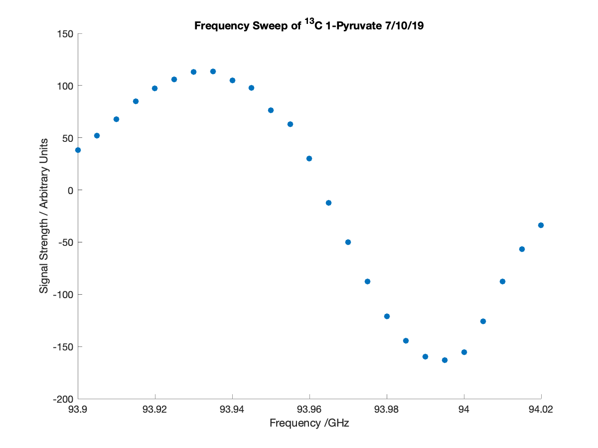

Generating a Scatter Plot from Comma Delimited Data
Contents
Generates a scatter plot from a .dat file (dat variable) (works for any comma delimited data) from Oxford Hypersense to show signal strength as a function of time
Inputs
dat: is a file containing lines with comma delimited data
xlab: is the x-axis label on the outputted scatter plot (character vector)
ylab: is the y-axis label on the ouputted scatter plot (character vector)
titl: is the title on the outputted scatter plot (character vector)
Outputs
x: is a column vector containing the x-values of the plotted data
y: is a column vector containing the y-values of the plotted data
Child Functions
isdatfil: checks if an input is a readible file
parsedat: parses files containing data that is comma delimited
ischarvec: checks if an input is a character vector
function [x,y] = hyperscatter(dat,xlab,ylab,titl)
Calling the User if There are Insufficient or Invalid Inputs
The function requires a file from which data will be plotted from, so it will call for user input if the input is invalid or not entered
trut = 1;
while trut == 1
trut = 0;
if nargin < 1
prompt = 'Enter a comma delimited data file to plot: ';
dat = input(prompt,'s');
bool = isdatfile(dat);
if bool == 0
trut = 1;
end
elseif isempty(dat) == 1
prompt = 'Enter a comma delimited data file to plot: ';
dat = input(prompt,'s');
bool = isdatfile(dat);
if bool == 0
trut = 1;
end
else
bool = isdatfile(dat);
if bool == 0
prompt = 'Enter a valid comma delimited data file to plot: ';
dat = input(prompt,'s');
booln = isdatfile(dat);
if booln == 0
trut = 1;
end
end
end
end
Parsing a File with Comma Delimited Data
dat is parsed using the parsedat function
data = parsedat(dat);
x = data(:,1);
y = data(:,2);
Creating a Scatter Plot
Creates a scatter plot of the second column of data in the file vs. the first column. If valid values (character vectors) have been assigned to xlab, ylab and/or titl, they will appear on the plot as the x-axis label, y-axis label and title respectively.
if nargin >= 2 xlabbool = ischarvec(xlab); end if nargin >= 3 ylabbool = ischarvec(ylab); end if nargin == 4 titlbool = ischarvec(titl); end figure('Position',[0 0 600 450]) scatter(x,y,'filled') if xlabbool == 1 xlabel(xlab) end if ylabbool == 1 ylabel(ylab) end if titlbool == 1 title(titl) end
end
x = 93.9000 93.9050 93.9100 93.9150 93.9200 93.9250 93.9300 93.9350 93.9400 93.9450 93.9500 93.9550 93.9600 93.9650 93.9700 93.9750 93.9800 93.9850 93.9900 93.9950 94.0000 94.0050 94.0100 94.0150 94.0200 y = 38.3715 52.1952 67.9495 84.8678 97.2640 106.0330 113.2150 113.7580 105.0550 97.8689 76.4604 62.7577 30.1231 -12.1400 -49.8548 -87.6549 -121.1570 -144.2630 -159.6080 -163.2270 -155.4340 -126.0610 -87.4791 -56.5965 -34.0178
Notes
The inputs used in the example are:
dat: '1Pyr_7_10_sweep.dat'
xlab: 'Frequency /GHz'
ylab: 'Signal Strength / Arbitrary Units'
titl: 'Frequency Sweep of ^{13}C 1-Pyruvate 7/10/19'
The above example was run by putting:
[x,y] = hyperscatter('1Pyr_7_10_sweep.dat','Frequency /GHz','Signal Strength / Arbitrary Units', 'Frequency Sweep of ^{13}C 1-Pyruvate 7/10/19')
in the command window